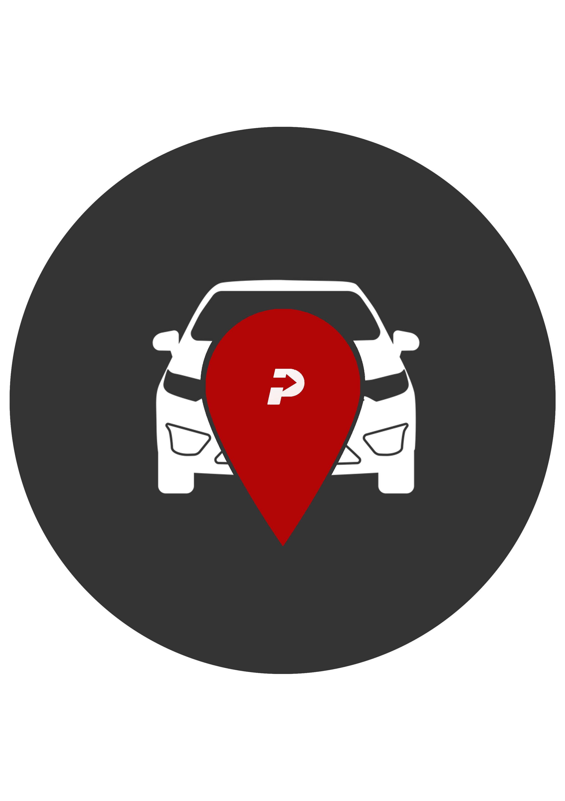

71000parking is an parking finder app made for Senior Design Project
purposes. It features parking locations from all around the city of
Sarajevo, where its developer resides. Its main purpose is discovering
and reserving parking locations, but also rating and commenting on
locations.
made by Haris Lapo with